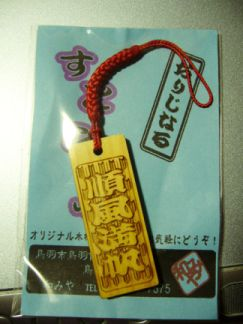
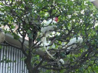
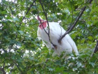

{kind=link}
{kind=link}


順風満帆！
どうもTEVAです。
がんばって社会人しておりますよ。
なんだかんだでもうすぐ一年経ちますしね、、、
工エｴ(;ﾟﾛﾟ)ｪエ工！？
うそん
もう11月後半なんすか。
こーいんやの如しって奴ですね。(「強引や。」の発音で)
今朝はたったの3℃しかありませんでした。
もう冬なんか、、、寒いとボードに行きたくなっちゃうじゃないか。
どーしてくれるんだ、まったく( ･д･ o)
寒くなる前に、バイクに乗らなくては死んでしまう。死んでしまうっ！
って事で、こないだ伊勢神宮に行ってきました。
や、伊勢はよく行くんですが、よく考えたら伊勢神宮の境内に入った事無いなーって。
なんかいっつも、場所がわからなくて引き返してたんですよね。
「外宮はこちらー内宮はあちらーー」
って、案内はそこらじゅうにあるんですが、なんかもうさっぱり道がわからない。
だから、「そうか、この街自体が伊勢神宮なんだ！」とか。
アホの子みたいな結論をこじつけてこれまで生きてきました。
母さん、僕はこの通り元気です。
で、父さんと行ってきたんですが、なんつか
最短ルートってのを知っているんですね。
あっちゅー間に着いちゃうんですよ(´・ω・｀)
俺だとその3倍は軽くかかる。
早朝に出発したとしても、俺なら夕方15時に到着。
父さん→12時に着。
この差は歴然。
アポストロフィー(何
でー、初めて外宮に着いたわけですが、何故か見覚えのある風景。
これが、、、デジャヴ？
何故だろう、、、涙がとめどなく溢れてくる、、、
これは、、、泣いてるの？私。
それとも前世の記憶？
ただの思い出？
アァアー(つ´д｀)つ
なんだよこの駐車場、俺が前に引き返した所だ。
入り口は目の前だったのかよ ○|￣|＿
えー、方向音痴とゆーか、周りが見えていないとゆーか
駐車場から20M北に進み、90°右向け右するだけで、
立派なケヤキとメガネ橋(ちょっと違うか)が迎えてくれるとゆーこのシチュエーション。
俺は50Mほど南に歩き、左右を見回し、正面を見据えても何も発見できなかったのでした。
それはいつの事だったか、、、
去年の夏頃、おきん茶屋のばあちゃんに助けてもらったとゆー話は書きましたが、
その時借りたお金を返しに行った後、こっそり伊勢神宮を目指していたのですよ。
まあ、前述の通り辿り着けなかったわけですがっがが
えー、その
そうそう
初めて伊勢神宮境内に足を踏み入れたわけですが
あれですね、外宮の方が素敵。
内宮はなんか観光地化が進んでまぁまぁだなーとか、思いました。
その時！
まるで俺がそんな事を考えていたのを見透かしたかの様に！
俺の目の前の樹だけが一斉に葉っぱを散らしたのです！
ギャー
ガー
サレンダー
ごめんなさい、めっちゃびびりました。
神様ごめんなさい。しょぼいとか思ってごめんなさい。
んぎゃー
まあ気のせいかもしれないですけどね。
それを言っちゃあお仕舞いよ、みたいな。
信じるものは馬鹿を見るけど救われるのだ。
人を信じたら傷付くなー
あ、それでですね。
なんかもー殴り書きでホント申し訳ないんですが
この日に買ったお土産の事を少し。
こんなの買っちゃいました(´д｀*)
 いいでしょｗ
大変お気に入りなのです。
これは、実はオーダーメイド。
自分の好きな言葉を指定するとその通り彫り込んでくれるお店があったんですよっ
霊験灼かなこの場所で、先行き良さそうな言葉を彫り込んで持ち歩けば
否応なしにも楽しく行けちゃうんじゃねーのっ！？ってゆーノリです。
皆さんも、伊勢神宮内宮に行くことがあれば探してみてねｂ
赤福はもう売ってませんが
でも、今回一番驚いたのはこれです。↓

なんと放し飼い状態のニワトリ。
羽ばたいて樹に登っちゃいます
ニワトリが空を飛んでいたとゆーのは知ってましたが、それはかなり昔の話だと思ってました。
まさか、この目で飛んでいる姿をゼルダの伝説以外で見ることが出来るとは、、、
意外とモコモコして、かわいかったですよｗ
いやー世界は不思議で一杯ですね。
素敵ですね。
素敵ですね。
素敵ですね。
そんな目で見るなよ、、、( ･д･ *)

MGS3熱が再発しております、どうもTEVAです。
俺は常々、色んな所に行って見聞を広めたいと要望を持っているわけですが、
本社勤務が決まってから、暫くそんな事も無いんだろうと少し諦めていました…。
しかし、うん。
イェイッ！
転勤決まりましたーー
難波の本社勤務から西宮の別現場勤務になりましたー！
ひゃっほーヾ(´д｀*)ﾉ
なんか新しいプロジェクトが始まるから、そこで修行してこいとの事です。
うーっひょー
えー、西宮はどこなのかっつーと、
難波が本社のある大阪圏で、西宮の現場は神戸になります。
多分(何
かの有名な甲子園球場よりもうちょっと先に行った所ですね。
え、家からとおっ(; д) ﾟ ﾟ
通勤時間1時間50分すか。
ひぇー
俺の苦手な物は、ニンジンでもゴキブリでもありません。
早起きと、「何処行くー？ → どこでもいいよー → Σ(ﾟ皿ﾟ#)」です(何
だ・だ・だ・だーーれが死ぬかー！
だ・だ・だ・だーーれが死ぬかー！
うおおお俺は大丈夫だ、あの日から何も変わっちゃいねええ！
こんにちは
なんかやけにへこたれた日記を最期 最後に、ずーっと更新していなかった僕です。
ほんと、へたれですねぇ。
あほです。
イェィ(何
近況。
割と余裕ぶっこいています(･д･)
仕事の内容も次第に覚えてきて、先が読めるようになってきました。
でも俺って奴は、ちょっと上手くいくとすぐに調子に乗るので注意が必要だ。
まじで。
現作業では、下手な操作をすると大量(何万〜何百万単位)の顧客データが吹っ飛んじゃったりするので。
まじで油断は禁物なのです。
あ、モツ鍋食いたい。
これまであったことー。
えーと、9月初めに茶小町と相方のかづきさんと、桃山御陵前まで焼き肉食ってきました。
で、カラオケ行って向こうの財政を圧迫したり。
食べ放題ということで、杏仁豆腐3つとアイスを食べました。
流石に、アイスで胸焼けがした。
杏仁豆腐は、、、好物だから別になんともなかったんですがっがが
で、また富士山に登って来ましたですよ！
こっそり！ｗ
更新してなかったから誰も知るまい！
すいません！
なんつか、PCを一日中触りっぱなしの仕事内容だと、家でもPCをいじろうと思えなくなりますね。
いや、いじる気持ちはあるんだけど、モチベーションが上がらないってゆー。
うがああー
Ctrlキーが左下にあればいいのにっ
なんでIBMのPCは使いもしないFnキーが左端にあるんだ！！！
どんな神経してんだ！
っつーか左下も使いにくいんだよ！
是非！'A'のすぐ左側にCtrlがあるように設定してみてください。
まじで使いやすくなりますので。
あ、AdministerじゃないからキーMap変更ツールは入れられないんすね。
入れちゃだめなんすね('A`)
うらー
Happy Hacking Keybord買ったぞー！
ななななんちゅー使い易さだ
ななななんちゅー作業効率なんだー！
近頃はですね、脳みそは確実に成長していると思うんですが
座り仕事と言うこともあって、「メタボリック」という言葉が頭を掠めます。
そういや、今の俺は死んだ魚の様な目をしているらしいですよ？
地味に、危険信号が出ている様です。
別に、むかつく事があるからとかじゃなくてですが。
っつーかむかつくのは、物わかりの悪い俺に対してのみなんですが。
まーなんだ。
とりあえず生きてますって事ですよ。
また明日とか、落ち着いて書きます。
放棄されたHP程、見ていて哀しい物はないですからね。
ﾊﾊﾝ('∀`)